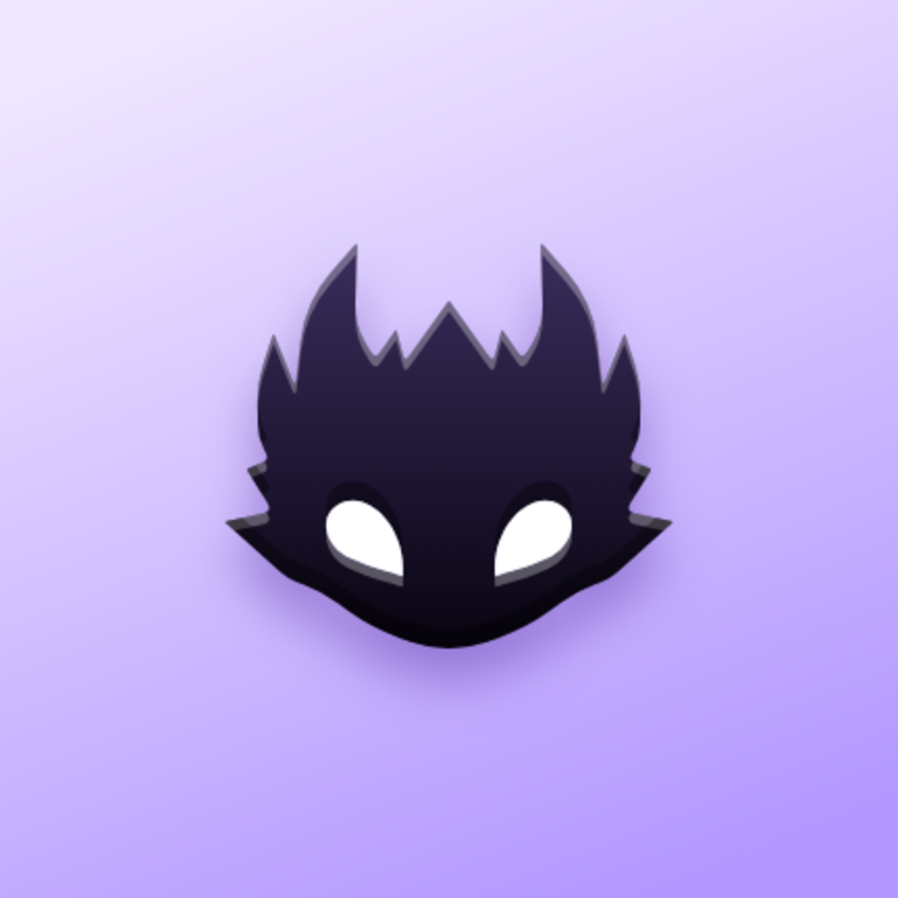
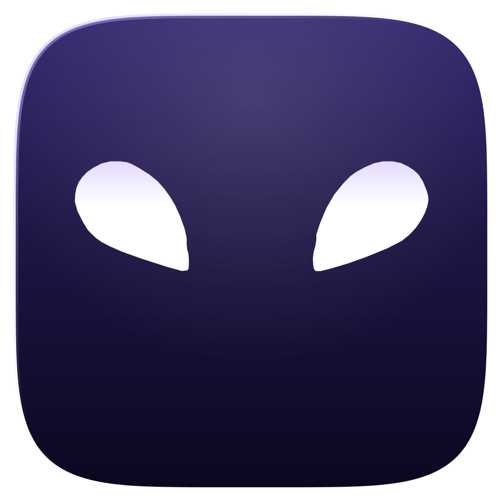
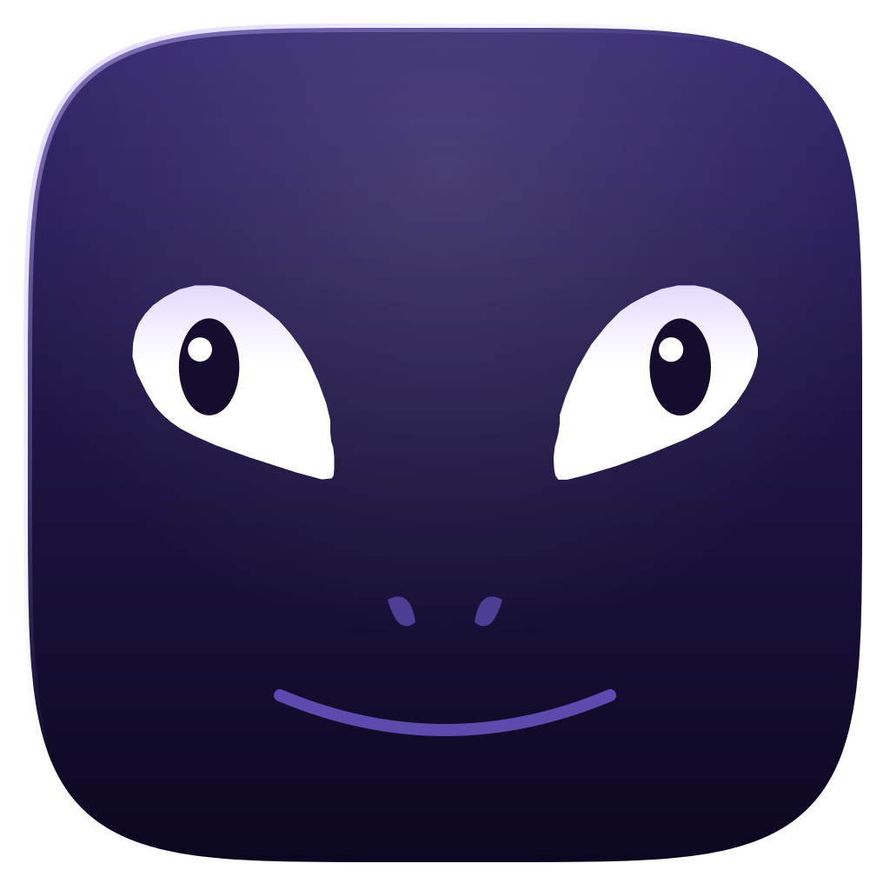
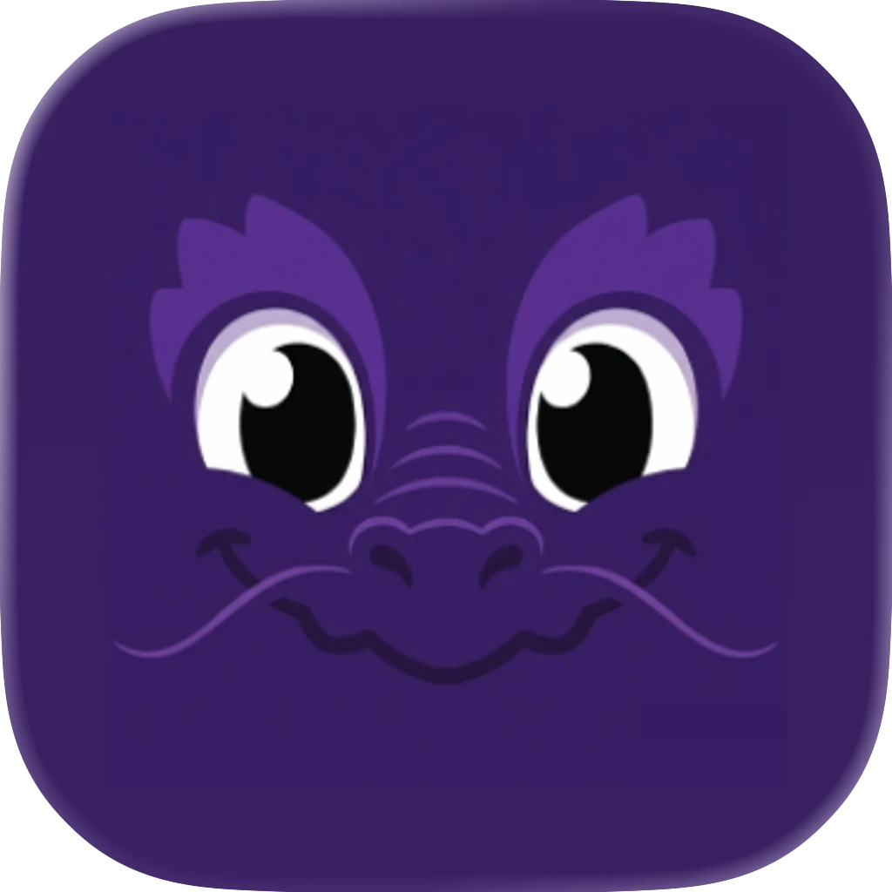
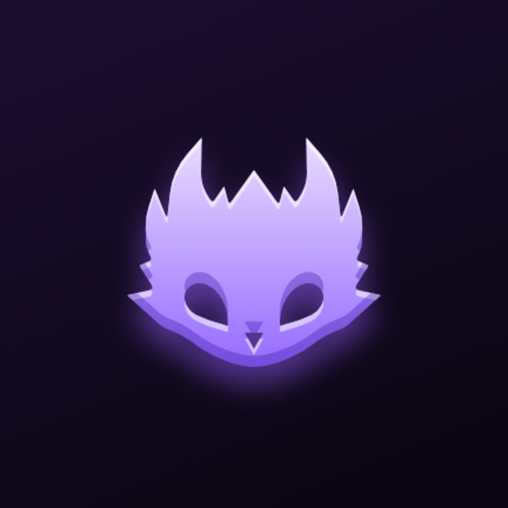
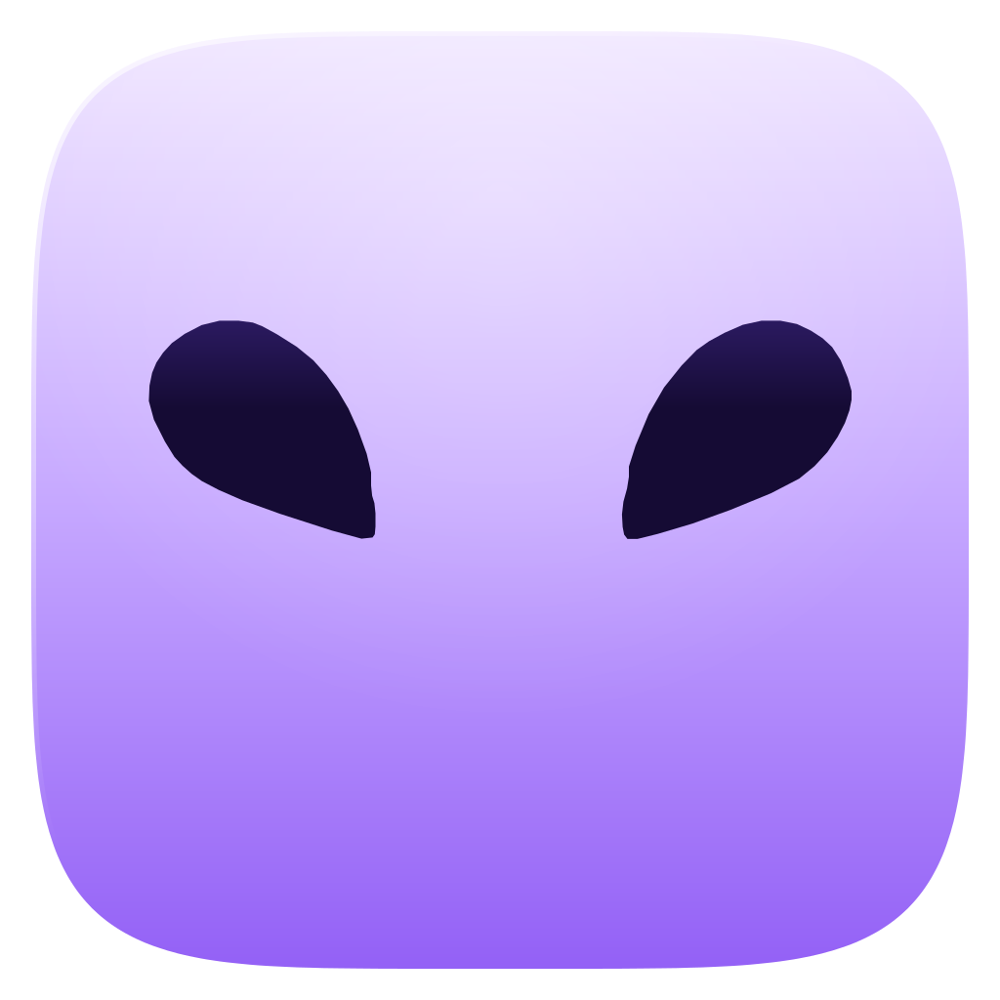
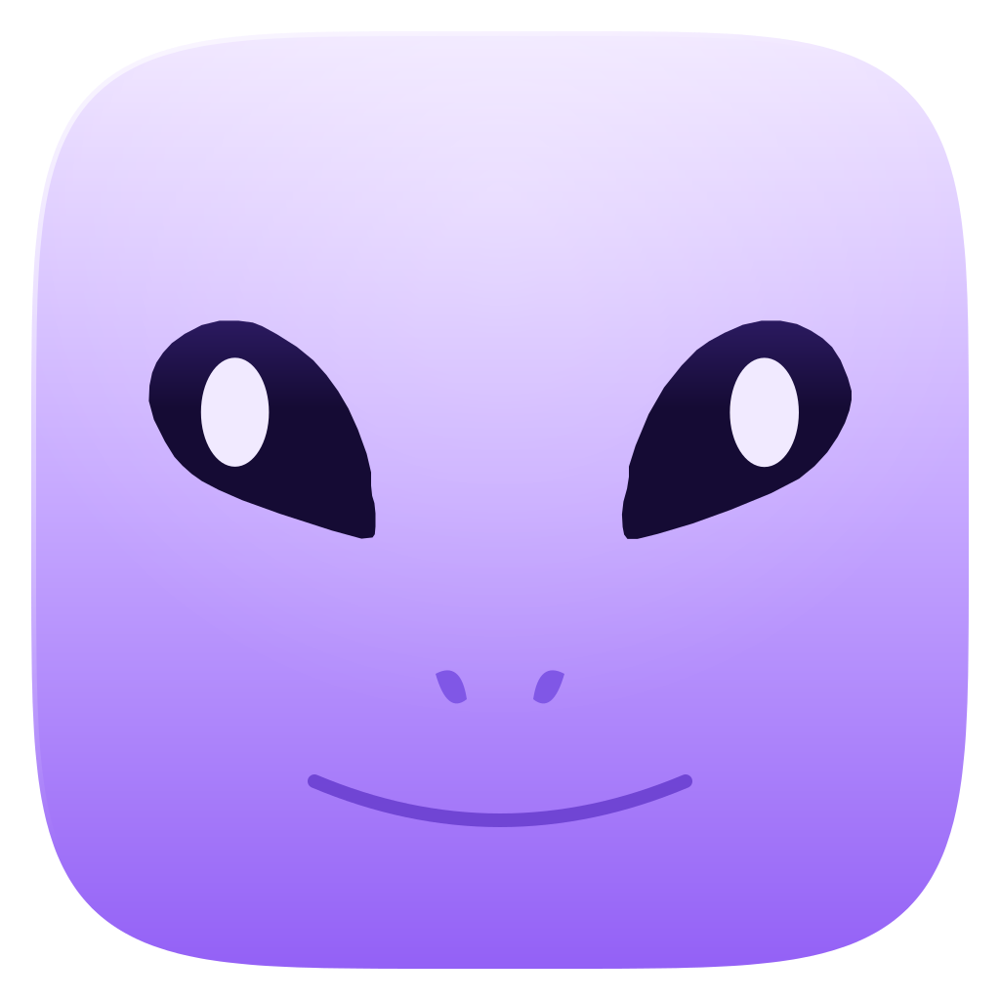
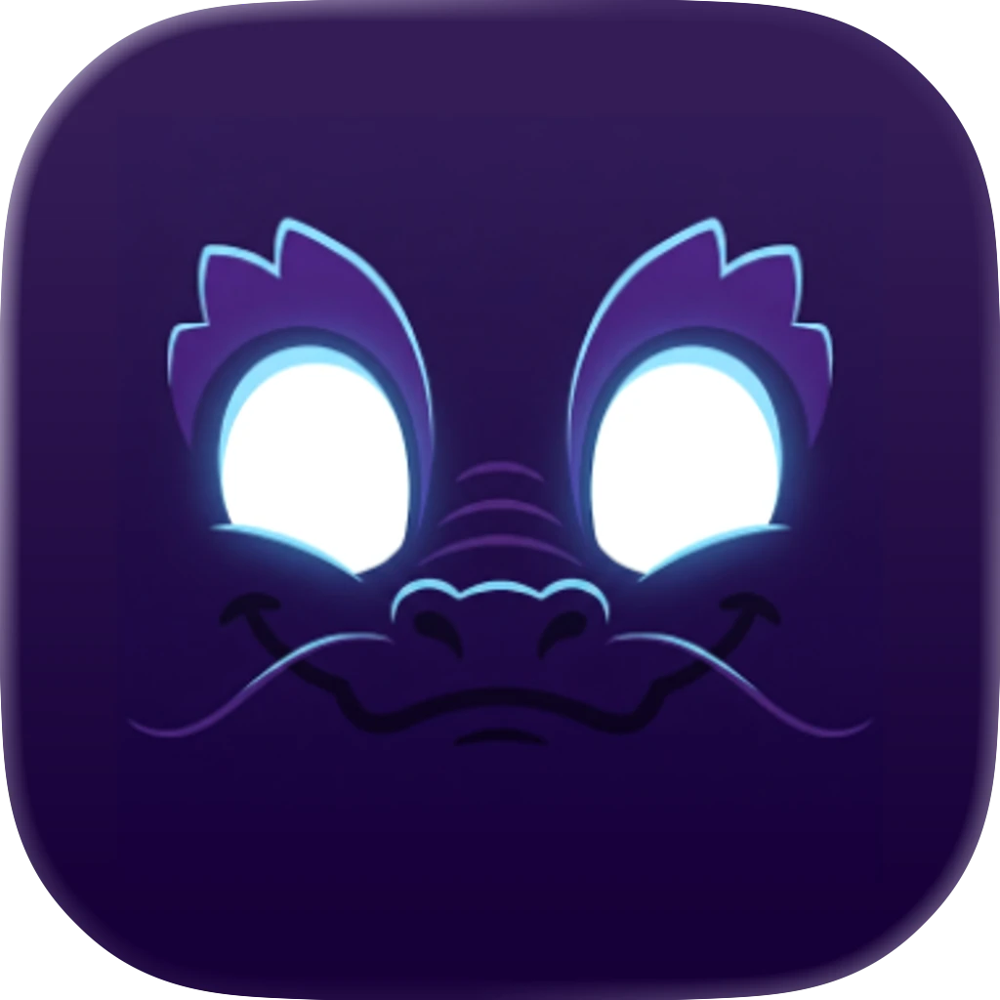

O ícone atual sem a forma da cabeça: o tile inteiro é a pele do dragão

Atual (claro)
silhueta: 3 formas→
A, zoom puro (claro)
pele + 2 olhos: 3 formas→
B, zoom + rosto (claro)
9 formas→
Antigo (claro)
cerca de 24 marcas
Atual (escuro)
silhueta: 3 formas→
A, zoom puro (escuro)
pele + 2 olhos: 3 formas→
B, zoom + rosto (escuro)
7 formas→
Antigo (escuro)
cerca de 24 marcasLegibilidade em 144, 96, 72 e 48 px
Atual
A claro
B claro
A escuro
B escuro
Antigo
Adaptive icon da versão B (tracejado = área segura de 66dp)